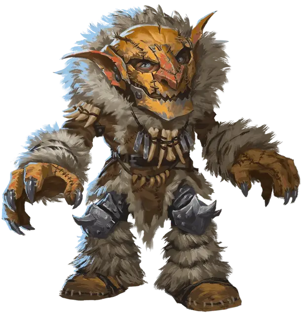

Спелликс Ромвуд
Spellix Romwod
Маленький Гуманоид (Гном), хаотично-нейтральный, именной НИП

Класс Доспеха 14 (шкурный доспех)
Хиты 33 (6к6 + 12)
Скорость 25 футов
| мод | спас | ||
|---|---|---|---|
| СИЛ | 6 | −2 | −2 |
| ЛОВ | 15 | +2 | +2 |
| ТЕЛ | 14 | +2 | +2 |
| мод | спас | ||
|---|---|---|---|
| ИНТ | 15 | +2 | +2 |
| МДР | 9 | −1 | −1 |
| ХАР | 16 | +3 | +3 |
Навыки История +4, Магия +4, Обман +5
Чувства тёмное зрение 60 футов, пассивное Восприятие 9
Языки Общий, Гномий, Гоблинский, Драконий, Эльфийский
Опасность 1/2 (100 опыта)
Бонус мастерства +2
Особенности
Гномья хитрость. Спелликс совершает с преимуществом спасброски Интеллекта, Мудрости и Харизмы от магии.
Врождённое колдовство. Базовой характеристикой Спелликса является Харизма (Сл спасброска от заклинания 13). Он может накладывать следующие заклинания, не нуждаясь в материальных компонентах:
• Неограниченно: огненный снаряд [fire bolt], волшебная рука [mage hand], электрошок [shocking grasp];
• 3/день: безмолвный образ [silent image];
• 1/день каждое: цветной шарик [chromatic orb], корона безумия [crown of madness], щит [shield].
*см. Действия
Действия
Электрошок (заговор). Рукопашная атака заклинанием: +5 к попаданию, досягаемость 5 фт., одно существо (бросок атаки совершается с преимуществом если цель облачена в доспехи из металла). Попадание: 4 (1к8) урона электричеством и цель не может совершать реакции до начала своего следующего хода.
Огненный снаряд (заговор). Дальнобойная атака заклинанием: +5 к попаданию, дистанция 120 фт., одна цель. Попадание: 5 (1к10) урона огнём. Пораженные уроном этого заклинания горючие предметы воспламеняются, если их никто не несет и не носит.
Описание
Глубинные гномы, или свирфнеблины, живут глубоко под поверхностью земли в запутанных подземных проходах и искусственных пещерах. Они выживают благодаря скрытности, уму и упорству. Их серая кожа позволяет сливаться с окружающим камнем. Для своего размера свирфнеблины удивительно сильны и тяжелы. В среднем, взрослый глубинный гном весит от 100 до 120 фунтов, а в высоту достигает 3 футов.
Обычно анклав глубинных гномов хорошо укреплен, и в нем проживает несколько сотен свирфнеблинов. На случае нападения врагов в поселениях глубинных гномов есть секретные туннели для эвакуации.
Разделение по полу. Мужчины свирфнеблинов лысы, в то время как у женщин свалянные серые волосы. Пока мужчины ходят по окраинам в поисках врагов и месторождений драгоценных камней, женщины управляют анклавом.
Собиратели драгоценных камней. Свирфнеблины ищут драгоценные камни, особенно рубины, которые добывают из шахт глубоко в Подземье. Именно охота за самоцветами втягивает их в конфликты с бехолдерами, дроу, куо-тоа, дуэргарами и свежевателями разума. Но среди множества этих врагов больше всего гномы боятся и презирают безжалостных демонопоклонников дроу.
Друзья земли. Глубинного гнома частенько можно встретить в компании существ со Стихийного Плана Земли. Некоторые свирфнеблины могут призывать этих существ. Поселения гномов охраняются земляными существами, а также зорнами, которых обещают кормить самоцветами.